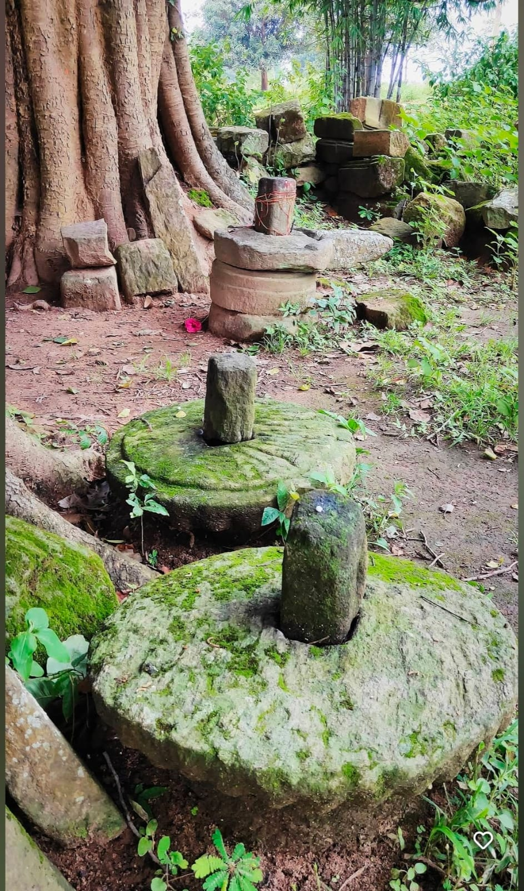
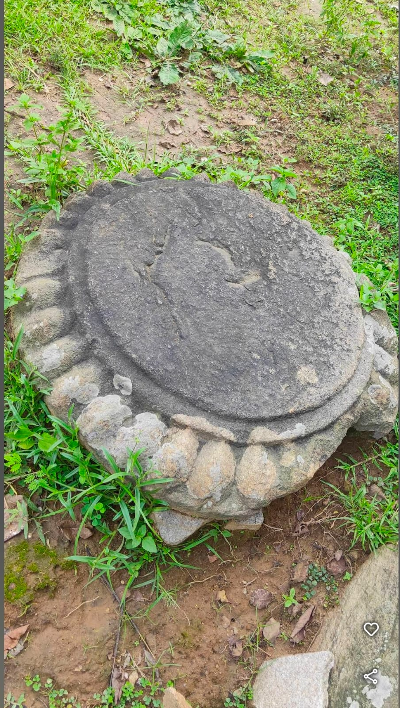
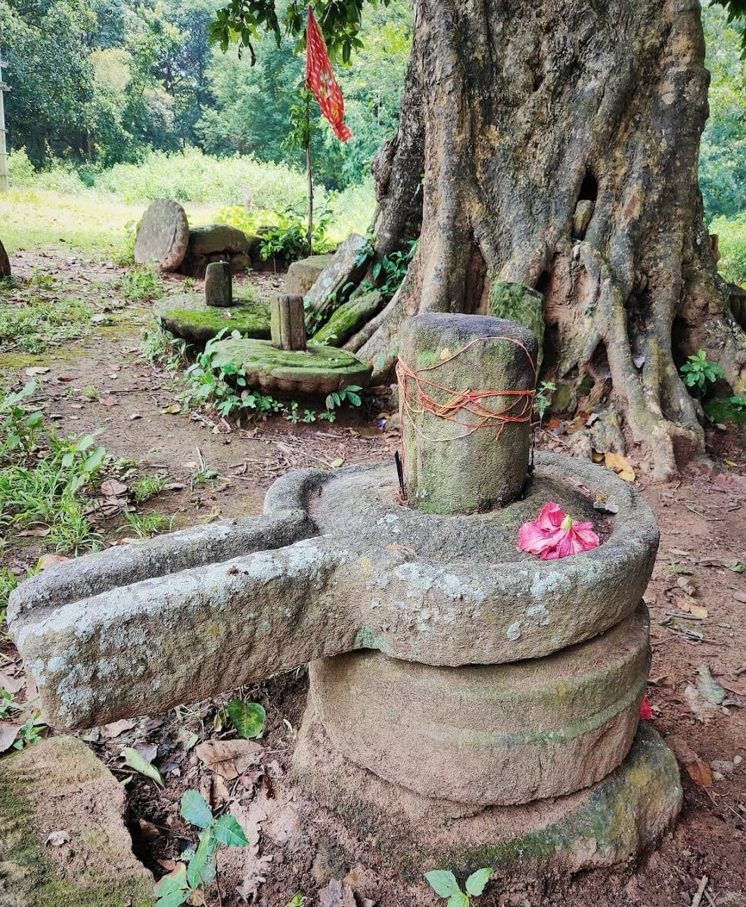
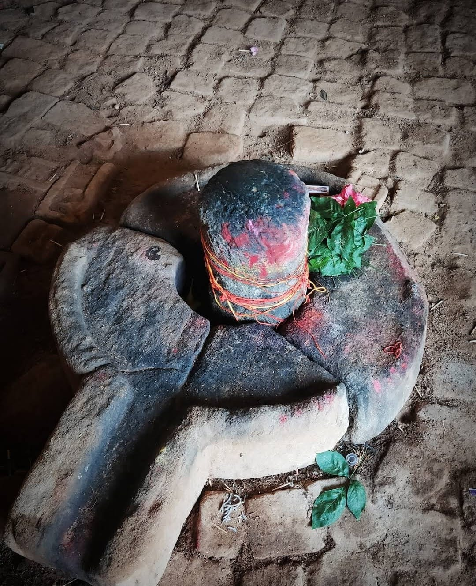

सदियों का इतिहास, समय की उपेक्षा से प्रभावित
महादेवटोली गाँव की गहराई में एक समय के भव्य मंदिर के शांत अवशेष स्थित हैं। 3,000 साल पहले हमारे पूर्वजों द्वारा तराशे गए ये पवित्र पत्थर, समय की कसौटी पर खरे उतरे हैं। आज, यह पवित्र स्थल उपेक्षित है, इसकी अमूल्य कलाकृतियाँ बिखरी हुई और असुरक्षित हैं।
हमारे तत्काल हस्तक्षेप के बिना, हमारी विरासत से यह अमूल्य जुड़ाव हमेशा के लिए खो सकता है। बिरसा वाहिनी फाउंडेशन ने इस स्थल की रक्षा और जीर्णोद्धार का संकल्प लिया है, और इसे साकार करने के लिए हमें आपके समर्थन की आवश्यकता है।